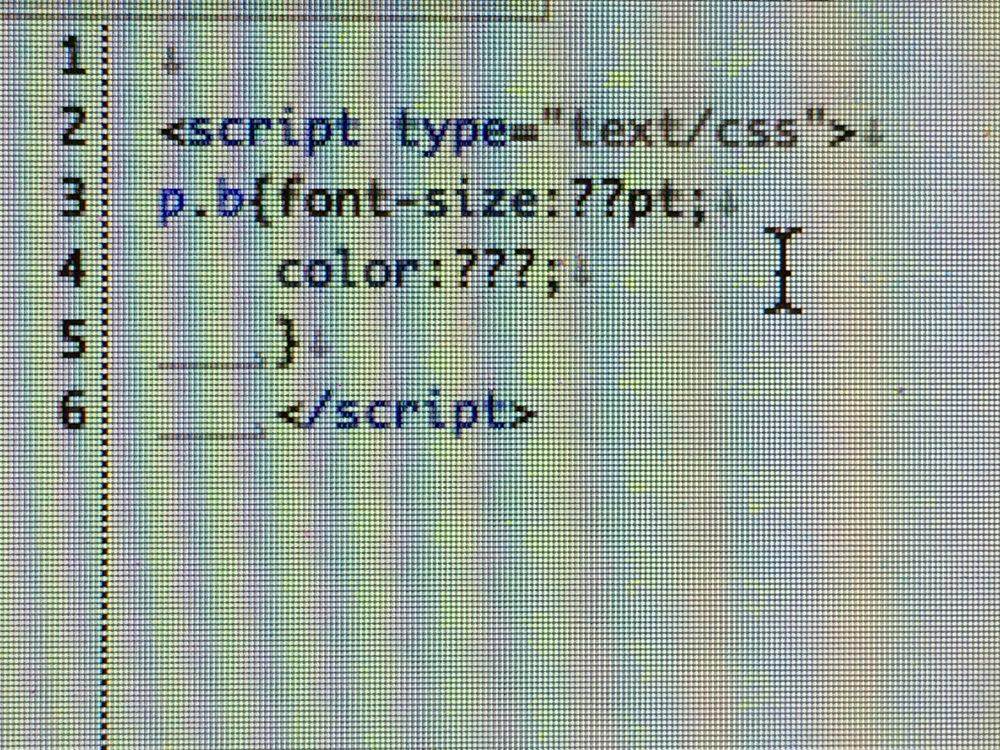

HTMLはウェベページを作るために開発された言語で、現在インターネット上に公開されているウェベページのほとんどはHTMLで作成されている
基本構造は、

のようになっている
CSS
しかしHTMLで行うことができるのは、ウェブページの大枠を作る事だけであり、細かいウェブ上での動作やレイアウトに関しては対応していないことが多い。そのHTMLに足りないところを埋めるため、背景、文字の色などのレイアウトなどを決めるCSS（細かい動作を決めるJavaScript）がある
基本構造は、
で、これをHTMLの中に入れるか、新しくCSSファイルを作るかすることで使えるようになる。
おまけ→